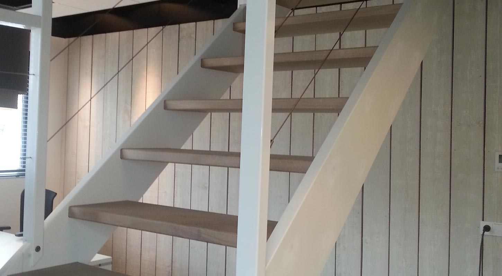

Zoldertrap van A tot Z
Een vaste trap naar de zolder
Vervang de vlizotrap door een vaste trap en maak van uw zolder een volwaardig deel van uw woning. Wij regelen het hele traject, met één aanspreekpunt.
- Pakket
- Van A tot Z
- Contact
- Eén aanspreekpunt
- Planning
- Strak, met vaste partners
- Werkgebied
- 30 km rond Weert
Ruimtegebrek?
Ooit aan uw zolder gedacht?
Veel woningen hebben boven nog een hele verdieping die nauwelijks wordt gebruikt. Zolang u er alleen via een vlizotrap komt, blijft het een opslagplek. Met het verbouwen van uw zolder en een vaste trap in plaats van de vlizotrap creëert u snel en makkelijk extra ruimte.
Een vaste trap is ook een goede investering in de waarde van uw woning. Voor een mogelijke koper maakt het een groot verschil of een woning één (slaap)kamer meer heeft. En u heeft er zelf elke dag meer woonplezier van.
- Veilig en comfortabel naar boven, ook met spullen in uw handen
- Ruimte voor een slaapkamer, werkplek of hobbykamer
- Een trap op maat die past bij de rest van uw interieur
Voordelen
Wat een vaste zoldertrap u oplevert
Een vaste trap verandert hoe u uw woning gebruikt.
-
Meer ruimte
De zolder is makkelijk bereikbaar. Ruimte waar u eerst niet goed bij kon, gaat u echt gebruiken.
-
Een extra kamer
Een gastenkamer, werkplek of slaapkamer op zolder, zonder dat u hoeft uit te bouwen.
-
Waarde van uw woning
Een (slaap)kamer meer maakt verschil voor een mogelijke koper.
-
Meer woonplezier
Elke dag makkelijk naar boven, via een mooie houten trap die past bij uw interieur.
Trap plaatsen van A tot Z
Het complete pakket
Bij een vaste trap naar de zolder komt meer kijken dan alleen de trap. Wij kunnen u een compleet pakket aanbieden, met slechts één aanspreekpunt.
Dit kunnen wij voor u regelen
- Constructieberekening uitvoeren
- Trapgat maken, ook in beton
- Vaste trap inmeten, maken en plaatsen
- Timmerwerk bij de afwerking
- Zolderindeling en interieurbouw, zoals kasten
- Dakkapel in hout of kunststof
- Veluxraam plaatsen
- Gas, water en elektra verleggen of aanpassen, indien nodig
- Bouwafval afvoeren
U heeft één aanspreekpunt voor het hele traject. Omdat wij nauw samenwerken met vaste partners, kunnen wij werken met een strakke planning. Zo blijft uw overlast zo klein mogelijk.
Het traject
Zo verloopt uw zoldertrap, stap voor stap
Elke woning is anders. Daarom kijken wij eerst samen naar uw situatie en stemmen wij de stappen daarop af.
Afspraak en mogelijkheden
Wij komen langs en bespreken samen met u de mogelijkheden: waar de trap kan komen, welke stijl u wilt en wat u met de zolder van plan bent.
Constructieberekening
Voor een trapgat wordt een deel van de vloer weggenomen. Met een constructieberekening wordt vooraf bepaald hoe dat veilig en stevig kan.
Inmeten, offerte en planning
Wij meten de trap nauwkeurig in. U ontvangt een vrijblijvende offerte en wij stemmen de planning af met onze vaste partners.
Trapgat en voorbereiding
Het trapgat wordt gemaakt, ook in een betonvloer. Zitten er leidingen in de weg, dan worden gas, water en elektra verlegd of aangepast.
Trap maken en plaatsen
Uw trap wordt op maat gemaakt en geplaatst. Natuurlijk zorgen wij ervoor dat de trap voldoet aan het bouwbesluit.
Afwerken en opruimen
Het timmerwerk rond de trap wordt netjes afgewerkt. Wij voeren het bouwafval af, zodat u direct van uw zolder kunt genieten.
Meer dan een trap
Van zolder naar volwaardige ruimte
De trap
Een trap die past bij uw woning
Een zoldertrap hoeft geen bijzaak te zijn. Wij maken trappen in diverse houtsoorten, van modern en strak tot landelijk, eventueel op kleur gespoten of in combinatie met smeedijzer, rvs of glas.
Wilt u dat de overloop licht en ruim oogt, dan is een open trap vaak een goede keuze: tussen de treden zit geen stootbord, waardoor het licht erdoorheen valt. Is er weinig vloerruimte, dan kan een wenteltrap of kwarttrap uitkomst bieden. Een dichte trap geeft juist een rustig beeld en ruimte voor bijvoorbeeld een kast eronder. Wij adviseren u wat in uw situatie het beste werkt.
Meer over maatwerk trappenZolderindeling
Kasten en interieur op maat
Een zolder heeft schuine wanden, balken en hoeken waar standaardkasten niet passen. Juist daar maakt maatwerk het verschil. Wij maken kasten die precies onder het dak passen, zodat u elke centimeter benut.
- Inbouwkasten onder het schuine dak
- Open vakken, lades en deurtjes naar keuze
- Afgestemd op de stijl van uw trap en woning
Licht en ruimte
Dakkapel en Veluxraam
Een zolder wordt pas echt prettig met daglicht en stahoogte. Een dakkapel geeft extra ruimte en licht, een Veluxraam brengt licht binnen via het dakvlak zelf.
Wij kunnen een dakkapel in hout of kunststof voor u realiseren en een Veluxraam plaatsen. Dat gebeurt in dezelfde planning als uw trap, met dezelfde vaste partners en hetzelfde aanspreekpunt.
Ons werk
Trappen en zolders
Klik op een foto om die groter te bekijken.
Veelgestelde vragen
Vragen over een vaste zoldertrap
Kan mijn vlizotrap vervangen worden door een vaste trap?
In veel woningen wel. Of het kan en waar de trap het beste komt, hangt af van uw situatie. Daarom maken wij eerst een afspraak om samen met u de mogelijkheden te bespreken.
Waarom is een constructieberekening nodig?
Voor een trapgat wordt een deel van de vloer weggenomen. Een constructieberekening laat zien hoe dat kan zonder dat de vloer zijn stevigheid verliest. Die berekening kunnen wij voor u laten uitvoeren als onderdeel van het pakket.
Kan er ook een trapgat in een betonvloer?
Ja. Wij maken het trapgat, ook in beton.
Moet ik zelf andere vakmensen regelen?
Nee. U heeft één aanspreekpunt voor het hele traject. Wij werken nauw samen met vaste partners, bijvoorbeeld voor het verleggen van gas, water en elektra, een dakkapel of een Veluxraam.
Wat als er leidingen of kabels in de weg zitten?
Dan worden gas, water en elektra verlegd of aangepast, als dat nodig is. Dat nemen wij mee in de planning.
Voldoet de trap aan het bouwbesluit?
Ja. Wij zorgen ervoor dat onze trappen voldoen aan het bouwbesluit.
Hoeveel overlast heb ik van de verbouwing?
Omdat wij met vaste partners werken, houden wij een strakke planning aan. Zo blijft uw overlast zo klein mogelijk. Na afloop voeren wij het bouwafval af.
In welk gebied werkt u?
Ons werkgebied is voornamelijk Zuidoost Nederland, binnen een straal van 30 km vanuit Weert.
Bespreek de mogelijkheden voor uw zolder
Maak een afspraak en wij bekijken samen met u wat er in uw situatie kan. U ontvangt daarna een vrijblijvende offerte.